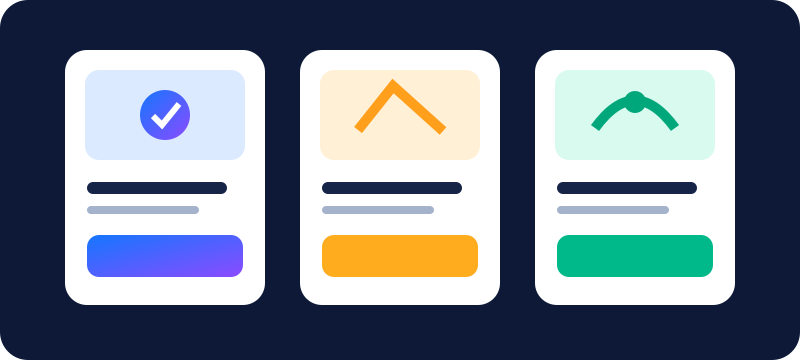

أهلاً بيك في رحلتك ✨
كل يوم خطوة…
وكل خطوة بتفرق.
تدرّب مع متحدثين أصليين، اجمع الكلمات الجديدة، وحوّل أفكارك لجمل تقدر تقولها بثقة.
💡 على الكمبيوتر: اسحب بطاقات الملخص وبطاقات الاختصار لإعادة ترتيبها بالطريقة اللي تريحك.
تقدمك النهارده
Shadowing
0 من 30 دقيقة
التحدث
0 من 60 دقيقة
مهمة صغيرة لليوم
حاول تحكي بالإنجليزية عن حاجة حصلت النهارده. لو نسيت كلمة، اشرحها بكلام أبسط بدل ما توقف.
الجلسات المسجلة: 0
رحلة التعلم السداسية
جملة جديدة ← تدريب بالنص الكامل ← كلمات مفتاحية ← كلام بدون نص ← موقف مختلف ← استرجاع بعد فترة.

جلسة التدريب
اختار مستواك وشغّل المصدر في تبويب منفصل. المؤقت يسجل الوقت الفعلي.
المؤقت متوقف
تدريب جملة واحدة
التسجيل للمقارنة الذاتية، وليس تصحيحًا آليًا للنطق. قد يتطلب الميكروفون HTTPS أو localhost.
دفتر المفردات
أضف كلمة
بطاقة المراجعة
كل الكلمات
السكريبتات ودفتر الجمل
قالب سريع
فكرة من يومك
لا يوجد API ترجمة أو ذكاء اصطناعي مدمج.
التحدث والمواقف
أنا النهارده
How are you feeling today, and why?
مؤقت التحدث
بنك المواقف — مقابلات العمل والحياة اليومية
كمل كلامك
Tell me more about a challenge you faced recently.
اتكلم من غير سكريبت
لو نسيت كلمة: “It’s something you use to…” أو “It’s similar to…, but…”
المراجعة الذكية
مراجعة قصيرة
0 كلمة مستحقة
اختبار أسبوعي
احكِ موقفًا، استخدم 3 تعبيرات، واتكلم دقيقة بدون سكريبت. قيّم نفسك بصدق.
رحلة التعلم السداسية
التقدم والإحصائيات
آخر 7 أيام
العادات
النقاط والشارات تحفيز فقط؛ الأولوية للكلام المستقل.
الإعدادات والنسخ الاحتياطي
النسخ الاحتياطي
بياناتك على جهازك. صدّر ملف JSON بانتظام؛ التخزين داخل المتصفح ليس نسخة خارجية.
لم يتم التصدير بعد.
الخصوصية
لا يوجد حساب أو خادم. الروابط الخارجية تحتاج إنترنت. الميكروفون قد يتطلب HTTPS أو localhost.
افتح موقعي ↗